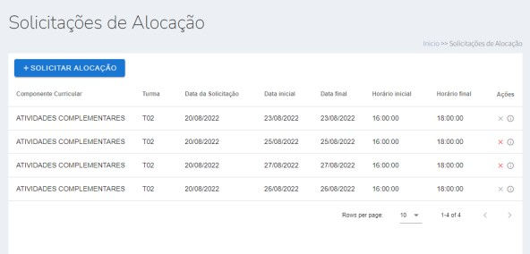

AdminDEP - Módulo de Laboratórios
O AdminDEP é um software de sistema departamental, e o gerenciamento dos laboratórios é uma função fundamental presente no AdminDep.

Visualizar todas as reservas dos laboratórios do departamento em forma de calendário
Visualizar todas as reservas relacionadas ao usuário em forma de calendário

Alocação de todas as turmas do semestre pelo Chefe do departamento por meio do AdminDep

Solicite Reservas para moderação da secretaria do departamento pelo AdminDep.
Liberdade do Porfessor de cadastrar sua prórpria reserva diretamente no AdminDep
Cadastro e exibição de informações dos Laboratórios para todos os usuários
This Repository is about the basic practice of HTML. Here, I have divided my lesson into folders and put the learning elements in a separate folder. This repository is only the basic practice of HTML. No project or project work is added here.
This Repository is about the basic practice of HTML. Here, I have divided my lesson into folders and put the learning elements in a separate folder. This repository is only the basic practice of HTML. No project or project work is added here.
Secretaria@dcomp.ufs.br